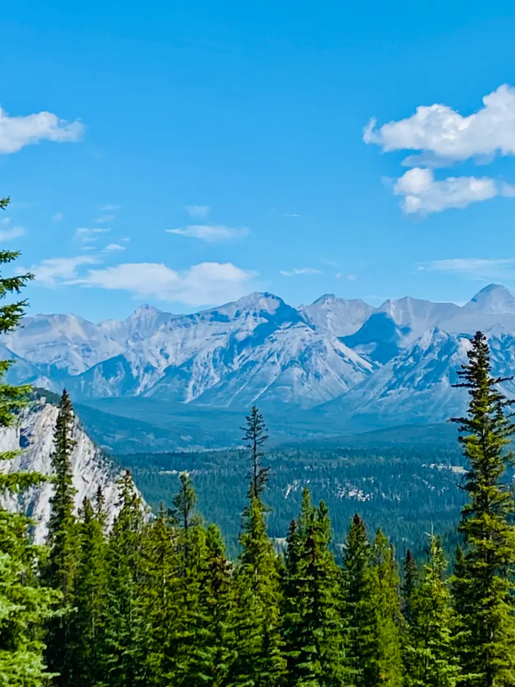

WELCOME TO SHANIA ESGUERRA'S HOME PAGE
ABOUT ME
I'm Shania Esguerra and I'm a member of The Church of Jesus Christ of Latter Day Saints. I'm was born and raised in the Philippines until I was 14 years old. My family and I decided to move to Canada and lived here ever since.

Alberta is a province between British Columbia and Saskatchewan. It is known for it's beautiful landscapes. It is home for the Canadian Rockies, five national, many provincial parks, lakes, and rivers. The five national parks are loacted at the following places: Banff, Jasper, Waterton Lakes, Elk Island, and Wood Buffalo. Alberta is also known for their oil as they hold the third largest oil reserve. This makes the province has a significant role in Canada's energy sector.
MY TOP 5 SONGS ON SPOTIFY
- "If You Believe" by Strive to Be, Patch Crowe
- "Golden" by HUNTR/X, EJAE, Audrey Nuna, Rei Ami
- "Bonvoyage" by Kim Daniel, 1of1
- "Padaba Taka" by dwta
- "Supernova" by WIM